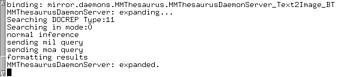

In the current implementation, little time has been spent on providing access to the Mirror architecture from the conceptual level. As a result, only applications programmers who write Moa queries can use the Mirror DBMS. In the small screenshot above, the interaction between the current GUI and the Moa level is traced.
In the future, we will support an OQL-like query language for end users on top of Moa and Monet, extended with some special constructs for specification of relevance judgements. Until that moment, end users are limited to the functionality specified in pre-defined forms, such as the GUI we demonstrated in this tour.
| Prev | To conclusions |
 Home: DEMO - The Mirror MMDBMS architecture
Home: DEMO - The Mirror MMDBMS architecture
Last updated: December 9, 1999
Maintained by: arjen@acm.org